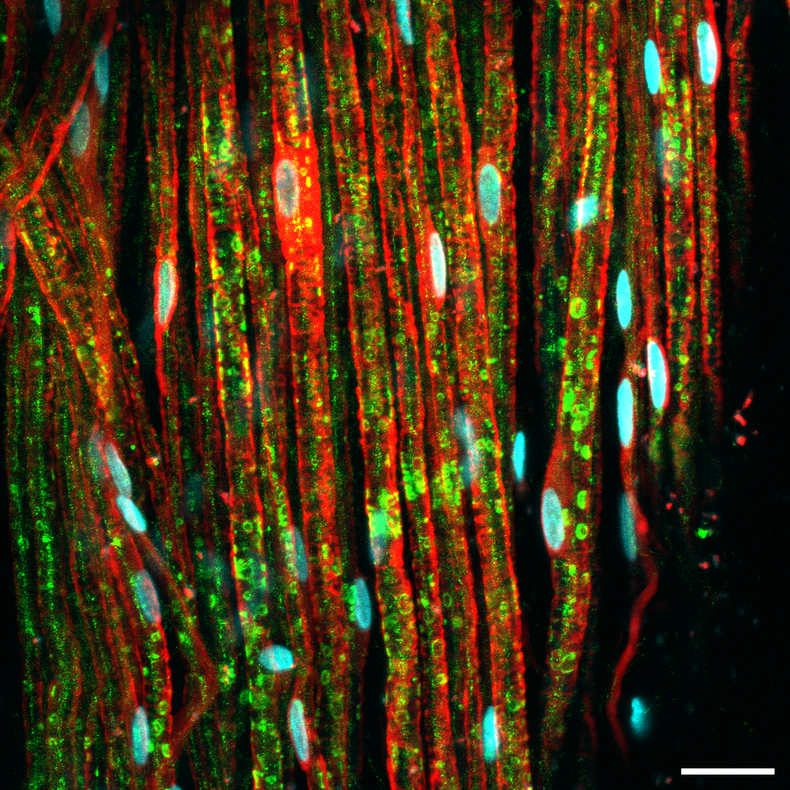

O nome: polirradiculoneuropatia desmielinizante aguda
Desmontar cada pedaço do nome expandido e entender por que ele define o mecanismo, o alvo e o curso da doença.
Nome expandido
Nome expandido da síndrome de Guillain-Barré: polirradiculoneuropatia desmielinizante aguda autolimitada.
Poli × mono × monomúltipla
Poli entra na classificação das neuropatias: mononeuropatia, mononeuropatia múltipla ou polineuropatia.
- Mononeuropatia = um nervo só (ex.: ulnar direito no cotovelo; mediano no túnel do carpo).
- Mononeuropatia múltipla = mais de um nervo, de forma assimétrica (ex.: mão direita e pé esquerdo).
- Poli = acometimento simétrico: mão D e E; braço D e E; perna D e E. Pode haver um lado pior, mas os dois estão envolvidos.
Radículo + desmielinizante
Radículo = a doença começa na raiz nervosa — ponto de emergência do nervo quando sai da medula espinhal.
Desmielinizante = o alvo é a bainha de mielina. O nervo periférico, em sua maioria, também é envolvido por mielina. O alvo primordial de Guillain-Barré é a bainha de mielina do nervo periférico.
Aguda ≤ 8 semanas
Aguda = evolução de até 8 semanas. Se a evolução passar de 8 semanas, passa a ser chamada de polineuropatia crônica. Evolução clínica até 8 semanas; a partir de 8 semanas o quadro tem que começar a melhorar. A melhora não é rápida: precisa de tempo para a remielinização. Se não melhorar após esse prazo → forma crônica.
Autolimitada
Autolimitada é, em parte, redundante com "aguda": se dura até cerca de 8 semanas e deve melhorar, a duração é limitada.
Por que importa na prática: confundir com EM (mielina errada) ou com mononeuropatia (padrão errado) muda exame, prognóstico e conduta.
Resumo operacional: poli simétrico + raiz + mielina periférica + ≤8 semanas + deve melhorar = GBS no nome.

Valeriia Ustymenko, via Wikimedia Commons · CC BY 4.0 · fonte
A mielina que o anticorpo ataca
Esta é a bainha de mielina do nervo periférico — o alvo. A proteína básica de mielina (MBP, em verde) envolve os axônios como um isolante elétrico. No GBS, anticorpos produzidos após uma infecção atravessam essa estrutura. Não é a mielina do cérebro: o alvo mostrado é a bainha do nervo periférico.
De onde vêm os anticorpos que atacam essa mielina — o gatilho infeccioso.
Quiz
Q1. Em Guillain-Barré, o alvo primordial da mielina é:
Q2. "Aguda", no nome da síndrome, significa evolução de até:
Q3. Polineuropatia implica acometimento: